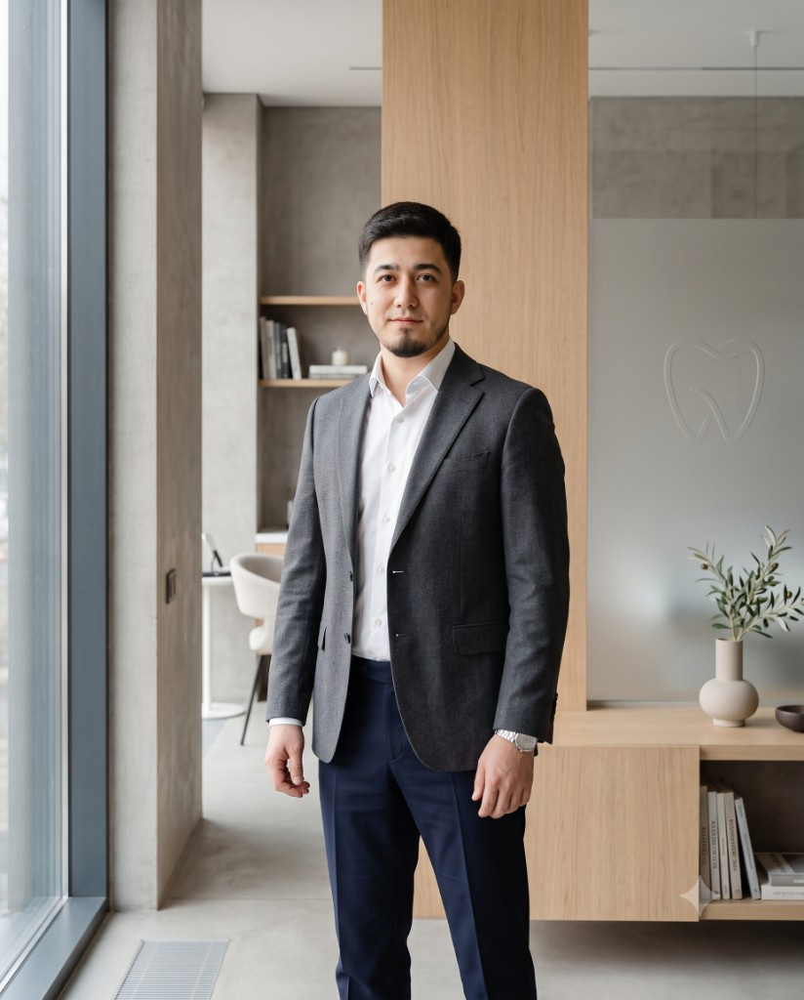

Существует
Практика
Expert Dental Studio — реальная клиника с действующими пациентами и накопленным опытом ведения сложных случаев.
RAIMOV DENTAL / Экосистема клинического качества
Атабек Раимов последовательно превращает личную клиническую практику в описанную систему: Raimov System, Raimov Academy и группу собственных клиник. Это открытая версия траектории развития — без обещаний доходности, франшизы и без приглашения на лечение в Бишкек.

01 / Точка старта
Основа RAIMOV DENTAL — не идея, а действующая клиника: Expert Dental Studio, где Атабек Раимов работает клиническим архитектором сложных случаев, и команда врачей разных специальностей внутри одного контура.
Существует
Expert Dental Studio — реальная клиника с действующими пациентами и накопленным опытом ведения сложных случаев.
Существует
Врачи разных стоматологических специальностей уже работают внутри одного клинического контура под руководством Атабека.
Формируется
Каждый сложный случай последовательно фиксируется: диагностика, план, ход лечения и результат — как основа будущего стандарта.
Главный актив — не перечень процедур. Главный актив — способ видеть сложный случай целиком и удерживать последовательность решений.
02 / Стратегическая ось
Каждая следующая фаза открывается только тогда, когда предыдущая стала управляемой и доказуемой. Роль Атабека меняется вместе с каждой фазой.
Сегодня
Expert Dental Studio остаётся реальной клинической базой, где Атабек лично ведёт сложные случаи и формулирует стандарты команды.
Практикующий врач, владелец и главный интегратор команды.
Условие перехода
Диагностика, планирование и ведение сложного случая становятся описанной, наблюдаемой практикой команды, а не личным ноу-хау.
Формируется
Диагностика, планирование, последовательность лечения, передача случая между специалистами и контроль результата превращаются в общий язык команды.
Автор и хранитель стандарта, лично проверяет ключевые решения.
Условие перехода
Система описана, применяется командой без постоянного личного участия Атабека и выдерживает проверку реальной практикой.
Следующая фаза
Метод передаётся врачам не как набор эффектных техник, а как способ разбирать сложный случай, собирать план лечения и работать командой.
Преподаватель метода и куратор первых профессиональных групп.
Условие перехода
Raimov System документирована, выдержала проверку практикой, и есть подтверждённый интерес врачей к обучению.
Следующая фаза
Новые точки в Бишкеке, затем в Кыргызстане и Центральной Азии открываются как управляемые части одной группы, работающие по единому стандарту.
Владелец стандарта качества, определяет требования к каждой новой клинике.
Условие перехода
Экономика и качество флагмана доказаны, а Raimov System работает без ежедневного ручного контроля Атабека.
Пятилетняя перспектива
Атабек развивает личную экспертную практику в юрисдикции с высоким профессиональным статусом — как признанный клинический эксперт.
Международный клинический эксперт и представитель стандарта RAIMOV DENTAL.
Условие перехода
Юридический путь, профессиональная лицензия, локальный партнёр и стабильный спрос подтверждены до инфраструктурных решений.
03 / Клиническое ядро
Raimov System формируется и документируется внутри действующей практики. Это не каталог процедур, а единая логика принятия решений на каждом этапе.
Честно о статусе. Raimov System сейчас формируется и документируется внутри Expert Dental Studio. Это не сертифицированный стандарт, не проверенная независимым аудитом методология и не развёрнутая сеть клиник — это первый этап, который должен пройти проверку практикой, прежде чем стать основой для Academy и новых клиник.
04 / Следующая фаза
Academy — следующая фаза экосистемы, которая откроется после того, как Raimov System будет документирована и проверена практикой. Сейчас собирается профессиональный интерес врачей.
Передать врачам не набор техник, а способ мышления над сложным клиническим случаем.
Научить работать по единому протоколу диагностики, планирования и контроля результата.
Готовить специалистов, способных поддерживать стандарт качества RAIMOV DENTAL в новых клиниках.
Строить обратную связь на реальных клинических разборах, а не на общей теории.
Профессиональный запрос в Academy
Оставьте контакт — представитель RAIMOV DENTAL свяжется с вами, когда программа будет готова к первому набору.
05 / Пятилетняя перспектива
RAIMOV DENTAL масштабируется как группа собственных клиник. Новая клиника открывается тогда, когда экономика и качество предыдущей доказаны, и работает по единому стандарту Raimov System.
Expert Dental Studio остаётся клинической базой и источником стандарта для всех следующих точек.
Региональный рост под прямым контролем качества, после того как флагман доказал устойчивую экономику.
Расширение за пределы Кыргызстана рассматривается только после проверенной модели в регионе.
Это не франшиза. Партнёр не покупает вывеску: стандарт распространяется вместе с командой, обученной по Raimov System, и системой контроля качества RAIMOV DENTAL.
06 / Личная траектория
Группу клиник невозможно построить, если каждое важное решение и каждый сложный пациент возвращаются к одному человеку.
Личная компетентность Атабека удерживает качество, но одновременно ограничивает масштаб доступным временем.
Атабек формулирует стандарты Raimov System, ведёт сложные показательные случаи и учит команду принимать согласованные решения.
Влияние Атабека распространяется через руководителей клиник, врачей Academy и контрольные точки качества, а не через ежедневную ручную работу.
07 / Стратегический разговор
Мы открыты к разговору с людьми, которые заинтересованы в развитии экосистемы RAIMOV DENTAL: практики, Raimov System, Academy и собственных клиник.
Важно Это приглашение к стратегическому разговору, а не публичное предложение приобрести долю, инвестировать средства или получить гарантированную доходность.
Если вам интересна траектория развития RAIMOV DENTAL — расскажите коротко о себе. Мы ответим и договоримся о разговоре, где обсудим детали лично.
Начать разговор
Заявка попадает напрямую представителю RAIMOV DENTAL.
Следующий шаг
Выберите путь, который отвечает вашей задаче — оба ведут к реальному разговору, а не к автоматическому ответу.
Инвестор / партнёр
Разговор о развитии практики, Raimov System, Academy и собственных клиник — без ROI-обещаний и продажи франшизы.
Обсудить развитиеВрач
Оставьте запрос — мы свяжемся, когда Raimov Academy будет готова к первому набору врачей.
Запрос в Academy